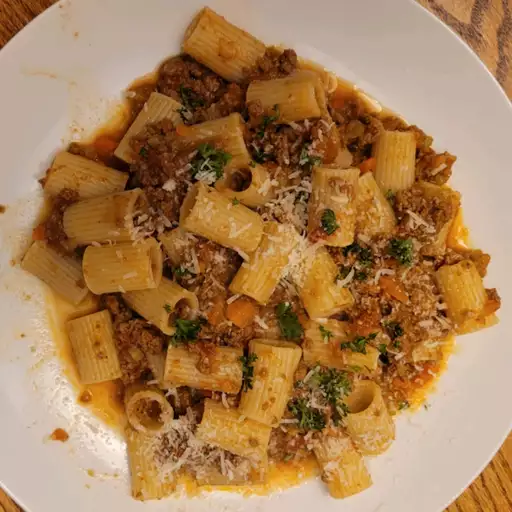

Bolognese Sauce

What is Bolognese?
Bolognese is a kind of ragu (the Italian word for meat sauce), originally from Bologna, Italy.
Ingredients
- Olive Olive
- Carrots
- Celery
- Onion
- Heavy Cream
- Ground Beef & Ground Pork
- Marinara Sauce
- (Optional)Pasta Noodles Of Choice
Steps
- Saute the carrots, celery and onion
- Stir in pork and beef
- When the meat is lightly browned, pour in your marinara sauce(store bought or homemade)
- Simmer at least 30 while the mixture cooks down and thickens.
- In a separate pot, at some point while the sauce mixture simmers, boil some water for your choice of pasta
- Once the sauce mixture has reached the desired thickness, stir in the heavy cream.
- When the pasta is al dente, and the cream is fully incorporated into the sauce mixture, combine however you like into a serving dish
- Enjoy!